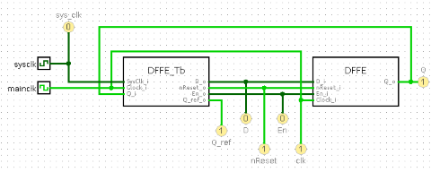

模拟测试台
您可以在电路中添加测试台来测试它，但由于仿真架构，您必须考虑以下限制。

仿真必须由 Logisim-evolution 驱动
您无法将事件生成元素添加到测试平台，例如，您无法添加时钟生成器进程。 您的测试平台必须采用 Logisim 的外部时钟作为输入。
不要使用基于时间的条件
Logisim-evolution 中不存在时间表示，不可以有基于时间的事件，例如 等待 5 ns 。 如果要进行异步验证，则必须添加一个频率至少是mainclk两倍的 sysclk 。 这样，您不仅可以在主时钟上升沿检查信号，而且可以在任何需要的时候检查信号。
下一步： 用户指南 .